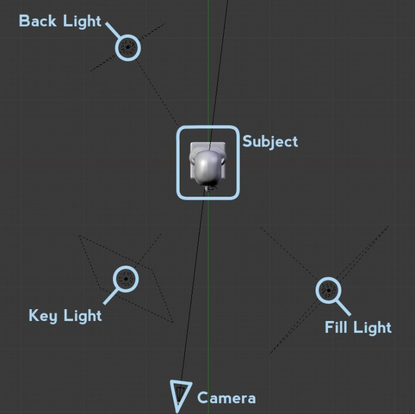
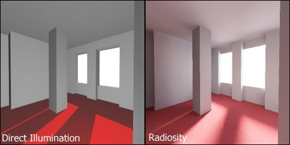

Introdução à iluminação no Blender
Definição
A iluminação é um dos aspetos mais importantes no trabalho com 3D. Criar uma iluminação adequada e eficaz para uma cena ou objeto implica muitas vezes experimentar e refazer, corrigir. Uma boa iluminação deve permitir ver as superfícies e os contornos ou formas, deve reforçar a sensação de profundidade e volume, a tridimensionalidade, e guiar a atenção do espetador para os aspetos mais importantes.
Em 3D, é comum identificarmos três tipos de iluminação.
Direct illumination/light (luz/iluminação directa): luz que vem de uma fonte específica sem refletir noutras superfícies. Os raios de luz viajam numa linha direita e numa direção.
Indirect illumination/light (luz/iluminação indirecta): luz que não vem de uma origem específica, luz refletida por outras superfícies na cena.
Global illumination (iluminação global): Conjunto de técnicas de radiosidade e renderização raytracing. O seu objetivo é calcular todas as interações de luz possíveis entre as superfícies numa cena e, deste modo, obter uma imagem fotorealista. É utilizada em 3D para aumentar o realismo da iluminação, tem em conta a luz proveniente de origem distintas/específicas (iluminação direta) e a luz proveniente dos raios refletidos nas superfícies existentes na cena (iluminação indireta).
Tipos de luzes
Tipos mais comuns de luzes:
Spotlight: luz com direção e posição, emite luz de um ponto e numa direção, funciona como um cone de luz. Tradicionalmente, é uma das lâmpadas mais utilizadas, dada a sua versatilidade e possibilidades de controlo. É uma óptima opção para Key Light mas pode ser utilizada para todos os fins.
Omni/Point light: luz que tem uma posição mas não tem uma direcção, é um ponto que emite luz em todas as direcções. Boa luz sobretudo para preenchimento ou iluminação secundária.
Infinite/Directional light: luz de intensidade constante (iluminação independente da distância a que se encontram os objectos) que tem uma direcção mas não uma posição. Ilumina todos os objectos de forma igual, mesma direcção, como se a origem da luz estivesse muito distante (i.e. sol, lua).
Area light: luzes muito realistas mas mais complexas de configurar e demoram mais tempo a processar. Estas luzes emitem luz a partir de uma área ou superfície (por exemplo, uma janela, ecrã) e com direção.
Ambient light: luz que não parece vir de uma origem específica, ilumina todos os objectos de uma cena de forma igual, ilumina com uma intensidade constante de todos os ângulos. Servem para simular a Global Illumination, definem uma quantidade mínima de luz na cena evitando que objetos fiquem totalmente na escuridão.
Alguns setups mais comuns
3 pontos
A 3 Point Lighting (Iluminação de 3 pontos) é uma técnica bastante eficaz de iluminação. É mais utilizada para retratos e iluminação cinematográfica.
 Imagem de Ben Simonds publicada em Lighting Tips from the Masters.
Key light (luz principal): fonte de luz primária, frequentemente colocada a 45 graus em frente e por cima do sujeito. Luz que gera a maior parte da iluminação. Principal função é iluminar os aspectos mais importantes.
Fill light (luz de preenchimento): fonte de luz mais suave que ameniza as sombras e contrastes criados pela Luz principal, para iluminar áreas de sombra. Tipicamente colocada do outro lado da câmara e num ângulo de 90º relativamente à key light.
Back light ou rim light (contra-luz): luz forte e brilhante colocada atrás do objeto, utilizada para separar o objecto de interesse do fundo criando uma fina linha de luz ao longo da silhueta do objeto de interesse. Permite destacar os contornos do objecto fazendo com que este se destaque do fundo.
4 pontos
Sistema de 3 pontos mais uma...
Set light ou background light (luz do cenário ou do fundo de cenário): ilumina o fundo, permitindo maior controle sobre a atenção ou destaque a atribuir ao fundo.
Iluminação de exteriores com Blender Internal Render 1
Seguir o setup sugerido acima para a iluminação com 3 pontos mas substituir a Key Light por um Sun com Ray (Trace) Shadows
Iluminação de exteriores com Blender Internal Render 2
Seguir o setup sugerido acima para a iluminação com 3 pontos mas substituir a Key Light por um Sun com No Shadow e uma Spot com Buffer Shadow e Only Shadow. Esta Spot deverá ter a mesma rotação/direcção do Sun (Sugestão: coloque o Sun, depois duplique-o com Shift+D e altere o duplicado para Spot).
Iluminação de exteriores com Blender Internal Render 3
1. Approximate Ambient Occlusion como base.
2. Iluminação direta com Sun.
3. Sombras com Spot, Only Shadow e Buffer Shadow.
Iluminação de exteriores com Cycles 1
Sistema mais básico inclui utilizar a cor de Background (sugestão: azul claro tipo #E8EFFF) + luz Sun. Utilize uma cor amarelada para o Sun e diminua o Shadow Size (sugestão: 0.005) para obter sombras mais nítidas (como num dia de sol).
Iluminação de exteriores com Cycles 2
Sun (RGB 1, 0.98, 0.9) + Shadows Size = 0.050 + No World, definir Color para Sky Texture + Ambient Occlusion = 0.25
Iluminação de exteriores com Cycles 3
Utilizar iluminação baseada em imagens (Image-based lighting) como no texto Environmental Lighting com HDRI.
Em imagens com animação, recomenda-se o segundo setup e substituir o fundo preto pelo fundo que pretende. Em imagens sem animação pode utilizar qualquer um dos setups, depende apenas se pretende que se veja no fundo a imagem utilizada para a iluminação.
Alguns termos e conceitos importantes
Light rigs (arranjos de luzes): designação de uma configuração e arranjo de iluminação. Geralmente, implica a utilização de várias luzes.
Ambient Occlusion é um cálculo sofisticado de raytracing que simula as sombras suaves da Global Illumination. Não existe AO no mundo real, é um truque de renderização (não tem qualquer relação com luzes) fisicamente não correto mas geralmente com bons resultados. É uma espécie de iluminação global indireta de cima para baixo. Cria a impressão de que os objetos presentes na cena são iluminados por uma luz suave e difusa (sem ponto de origem e direção). O cálculo é baseado nas formas, proximidade e orientação dos objetos e como estes bloqueiam (ocludem) a luz. Quanto mais próximo um objeto estiver dos seus vizinhos, mais luz é bloqueada e vice-versa.
Radiosity é uma técnica para renderização de cenas 3D que simula o modo como a luz ressalta (bounce) de uma superfície para outra dentro da cena. É mais preciso mas também exige mais recursos de processamento do que o raytracing.
 Imagem de Hugo Elias publicada na Wikipedia.
Volumetric lighting: Luzes volumétricas são luzes cuja iluminação pode ser observada através de um volume de espaço, em vez de simplesmente incidir numa superfície. De forma semelhante, as texturas volumétricas são texturas aplicadas através num volume de espaço, em vez de uma superfície. É a técnica utilizada para adicionar efeitos de iluminação numa cena como raios/colunas de luz brilhando através do ambiente. O termo God Rays é também diversas vezes utilizado mas sobretudo quando a fonte de luz é o sol.
 Imagem de Greg Zaal publicada em Making-Of 2.70 Release-Notes Volume Image.
Imagem de Greg Zaal publicada em Making-Of 2.70 Release-Notes Volume Image.
Ray tracing é uma técnica para renderização de cenas 3D. O Raytracing traça o caminho de cada raio de luz a partir da sua origem até que saia da cena ou se torne demasiado fraco para ter qualquer efeito. Por vezes, o termo também é aplicado para o método inverso: traçar o caminho de todos os raios de luz a partir da câmara até à origem da luz.